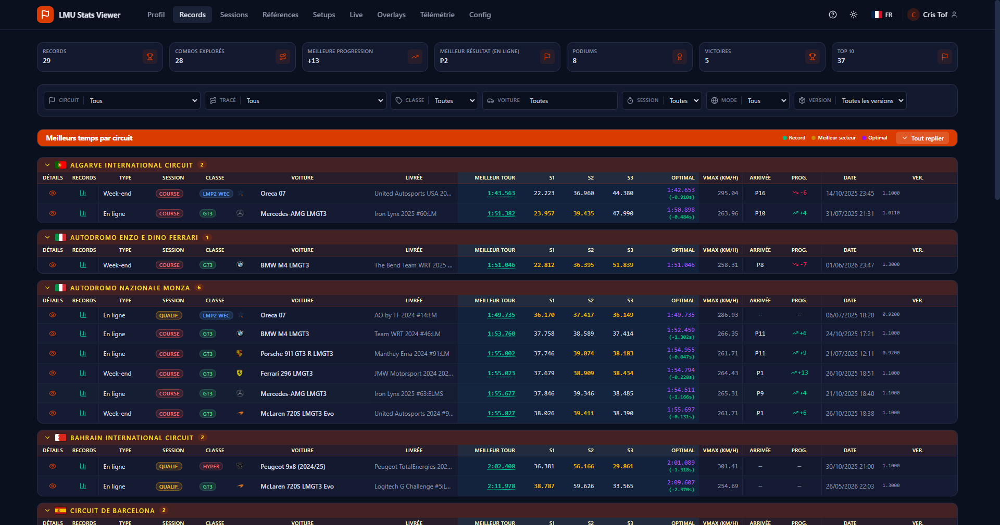
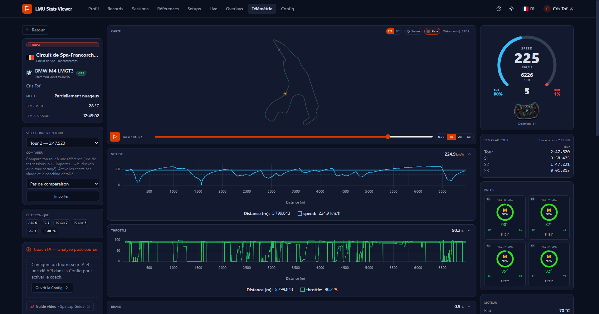
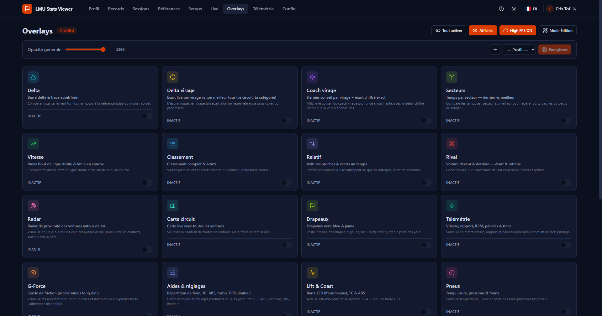
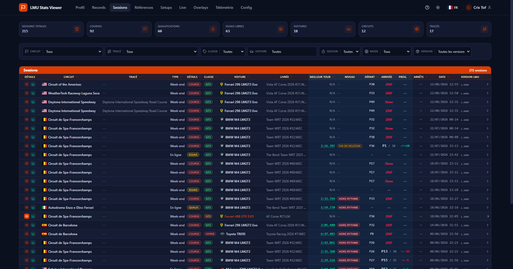

Votre rang sur chaque combo
Calculé tout seul à partir de vos meilleurs tours : position, top %, écart au plus rapide et répartition des temps, à côté de votre niveau OhneSpeed.
Windows 10 / 11 · Gratuit · Open source
Gratuite, open source, sans compte ni abonnement. LMU Stats Viewer lit les fichiers de votre jeu — résultats, télémétrie, réglages — et en tire vos records, votre place dans les classements de la communauté et l'analyse virage par virage. Et en course : live timing, 23 overlays et un ingénieur de course qui vous parle.
Licence MIT · Aucun compte, aucune inscription · Mise à jour automatique intégrée

L'essentiel
Avant la course pour comprendre, pendant la course pour réagir, après la course pour progresser.
Avant : l'analyse
La télémétrie du jeu, lue nativement : freinage, vitesse, gaz, direction sur une même vue, carte du circuit synchronisée avec les courbes, et le tour optimal théorique en face de votre meilleur tour.

Pendant : la course
23 overlays translucides que vous placez où vous voulez, sur n'importe quel écran, un live timing complet et un ingénieur de course qui vous parle : l'écart qui se réduit, le trafic à venir, la fenêtre d'arrêt, la météo, les drapeaux — même application réduite.

Après : le débrief
Records par circuit avec secteurs et tour optimal, temps de piste, victoires, régularité et heatmap d'activité sur l'année. Vous voyez où vous en êtes, votre rang parmi les pilotes LMU Stats Viewer et de combien vous vous rapprochez des références de la communauté.

Communauté
Les meilleurs tours des pilotes LMU Stats Viewer, circuit par circuit, par classe, voiture et version du jeu — dans l'app, page Classements, et en ligne.
Calculé tout seul à partir de vos meilleurs tours : position, top %, écart au plus rapide et répartition des temps, à côté de votre niveau OhneSpeed.
Seuls les tours validés par le jeu comptent, lus dans ses fichiers de résultats. Les secteurs incohérents et les temps impossibles sont écartés par le serveur.
Partager vos tours est facultatif et passe par votre compte Steam : rien ne part sans votre clic, et nous ne gardons qu'une empreinte de votre identifiant Steam. Vous apparaissez sous votre nom de pilote LMU, ou restez anonyme ; vos tours s'effacent en un clic, depuis n'importe quel PC.
Fonctionnalités
Douze modules qui travaillent sur les mêmes fichiers : ceux que Le Mans Ultimate écrit déjà sur votre disque.
Vos meilleurs tours groupés par circuit, avec secteurs S1/S2/S3, tour optimal théorique, V-max, position d'arrivée et progression. Filtres par circuit, tracé, classe, voiture, type de session et version du jeu.
Toutes vos sessions — essais, qualifications, courses — dans une liste paginée, triable et filtrable. Chaque cellule est un filtre : un clic sur un circuit ou une voiture et la liste s'ajuste.
Classement par classe avec écarts, tour par tour de chaque pilote (secteurs, carburant, usure pneus), stratégie, incidents, pénalités, chat et comparaison de pilotes en tête-à-tête.
Votre rang parmi les pilotes LMU Stats Viewer sur chaque combo, et les références OhneSpeed : votre niveau de Débutant à Alien, avec l'écart exact qui vous en sépare.
Scan automatique de vos fichiers .svm et création de vos propres réglages. Éditeur lisible (moteur, pneus, suspension, amortisseurs, châssis), notes, duplication, export et comparaison A/B — et chaque setup se rattache à la session où il a servi.
Lecture native des enregistrements du jeu : graphes multi-canaux, carte 2D et 3D du circuit, curseur synchronisé carte ↔ courbes, analyse virage par virage et meilleur tour théorique.
Tableau de bord temps réel via le plugin de mémoire partagée : chronos, delta, classement complet, carte du circuit, drapeaux, pneus, et stratégie carburant recalculée à chaque tour.
23 widgets translucides par-dessus le jeu — delta, relatif, secteurs, radar, carte, pneus, carburant, G-force, coach… Placement libre en mode édition, sur n'importe lequel de vos écrans, opacité réglable et profils enregistrés.
Il vous parle comme un ingénieur : l'écart qui se réduit, le trafic à venir, la fenêtre d'arrêt, la météo, les drapeaux, le carburant. Questions à la voix, alertes « préviens-moi », même application réduite. Reconnaissance 100 % hors-ligne dans les 5 langues.
Temps de piste, distance, tours, victoires et podiums en ligne et hors ligne, heatmap d'activité sur l'année et indicateurs de régularité.
Aucun compte. Tout est calculé sur votre machine, dans une base locale, et rien ne part sans votre accord : le partage de vos meilleurs tours est facultatif, et le Coach IA ne contacte que le fournisseur choisi — ou personne avec Ollama.
Analyse de course et de télémétrie avec votre propre clé API (OpenAI, Anthropic, Google, OpenRouter, DeepSeek, Mistral, Ollama en local ou tout service compatible OpenAI). Objectifs chiffrés vérifiés à la session suivante ; en course, les questions factuelles sont répondues tout de suite, sans IA ni coût.
Captures d'écran
Captures réelles, sur de vraies données de jeu. Les images suivent le thème du site : basculez en haut de page pour les voir en clair ou en sombre.
Fonctionnement
Le Mans Ultimate écrit déjà tout sur votre disque. L'application se contente de lire ces fichiers et de les indexer localement.
Résultats XML après chaque session, télémétrie haute fréquence si vous l'activez, et vos réglages .svm.
Les dossiers sont trouvés automatiquement. Seuls les fichiers nouveaux ou modifiés sont relus : le chargement reste instantané même avec des centaines de sessions.
Records, écarts, secteurs, stratégie, virages. Et en course, le live timing, les overlays et le spotter prennent le relais.
Pas de navigateur, pas de serveur local à lancer. Un .exe, et c'est tout.
Vos sessions sont indexées dans une base sur votre disque. Seuls vos meilleurs tours peuvent en sortir, et seulement si vous choisissez de les partager.
L'app vérifie les nouvelles versions et s'installe en un clic.
Installation
Un installeur, un premier lancement, et vos sessions passées sont déjà là.
LMU_Stats_Viewer_x.x.x_x64-setup.exe depuis la page des versions.Plugins du jeu — un guide s'affiche dans l'app si besoin.| Système | Windows 10 / 11 (64 bits) |
|---|---|
| Jeu | Le Mans Ultimate (Steam) |
| Runtime | Aucun — tout est inclus |
| Live & overlays | Plugin mémoire partagée rF2 (optionnel) |
| Télémétrie | « Telemetry Recording » activé en jeu (optionnel) |
| Coach IA | Une clé API, ou Ollama en local (optionnel) |
Questions fréquentes
Oui. Elle est gratuite, sous licence MIT, et son code est public. Si elle vous rend service, un café suffit à faire plaisir — mais rien n'est bridé sans cela.
Rien ne part sans votre accord. Tout est lu et calculé sur votre PC. Les requêtes sortantes sont la vérification de mise à jour, les temps de référence et les classements communautaires — pour afficher votre place, l'app envoie un temps et un combo, sans identifiant. Le reste n'a lieu que si vous l'activez : le partage de vos meilleurs tours, et les appels du Coach IA vers le fournisseur choisi (en local avec Ollama).
Le live, les overlays et le spotter reposent sur le plugin de mémoire partagée rF2, à copier dans le dossier Plugins du jeu puis à activer. Tant qu'il est absent, l'application affiche un guide d'installation ; le reste des fonctions marche normalement.
Non, le Coach IA est optionnel. Sans clé, toutes les autres fonctions restent disponibles. Si vous en voulez une, vous utilisez la vôtre : elle est chiffrée localement et vous gardez la maîtrise du coût.
Oui. Au premier lancement, tous les fichiers de résultats déjà présents sur votre disque sont indexés, y compris ceux de vos toutes premières sorties.
Non. C'est un projet indépendant, réalisé par un joueur pour la communauté, sans affiliation avec Studio 397 ni Le Mans Ultimate.
Activez le partage dans l'app (Configuration → Communauté) en vous connectant avec Steam — c'est Steam qui confirme votre identité, nous ne gardons qu'une empreinte de votre identifiant : après chaque session, votre meilleur tour valide est envoyé — circuit, voiture, classe, temps et secteurs, rythme médian, aides, et votre nom de pilote LMU sauf si vous restez anonyme. Jamais les tours des autres pilotes, vos réglages ni votre télémétrie. Désactiver le partage anonymise vos tours ; « Supprimer mes données » les efface du serveur.
Oui. Au premier lancement, « Continuer sans le jeu » ouvre directement l'application ; une bannière rouvre l'assistant en un clic le jour où le jeu est installé.
Installez l'application, lancez-la, et vos sessions apparaissent. Rien d'autre à configurer.